In System Travel
Star Systems
Star systems are divided into separate Orbital Zones. A central Zone containing the system primaries, a four Zone inner ring, a six Zone middle ring, and an 8 Zone outer ring.
It takes 6 hours of travel to reach any point within the same Zone.
It takes 12 hours of travel to reach a neighboring Zone.
A Full Burn costs 1 Fuel and halves the travel time of a single trip. This can involve moving across multiple Zones in a single, continuous navigation without stops.
Navigation
Roll a d6 after 12 hours spent navigating within a Zone, or when moving to a new Zone.
- 1: Encounter
- 2-3: Nothing
- 4-6: Zone Hazard
While under Full Burn roll two dice and keep the lower result. Hazard exposure is less likely, but being seen is more likely.
Obstacles
Obstacles are static threats or navigational impairments. They are always encountered while traveling through the zone in which they exist.
Map key: ⇥#
Obstacles include things like asteroid fields or electrically active nebula.
Hazards
Hazards are localized and spontaneous or irregular threats. A Hazard activates when the Navigation Roll result is a 4-6.
Map Key: 🗲#
Hazards include things like solar flares, corp sec patrols, or warp phenomena.
Encounters
Encounters are system specific NPCs, ships, space creatures, or other phenomenon that could be encountered system wide. Each system has it’s own random table of possible Encounters. A random encounter occurs if the Navigation Roll result is a 1.
Example

The Space Beagle is traveling from m4 to i1. Captain Vogt doesn’t want to fly through the asteroid fields in i2 and i4 (⇥1) and has heard rumors of corporate patrols in m3 (🗲1), so decides to travel through c0 and risk solar flares (🗲2) from the unstable primary. Being low on Fuel, they travel under normal power, expecting the trip to take 48 hours.
In i3 the GM rolls a 1 and rolls on the Encounter Table to find that a local science boat is requesting excess Fuel. The captain Comms his regrets and keeps moving. In c0 the GM rolls a 3, letting the Beagle luckily dodge the solar flares. In i1 the GM rolls a 5, but without a Hazard in that Zone the ship has completed its navigation without issue.